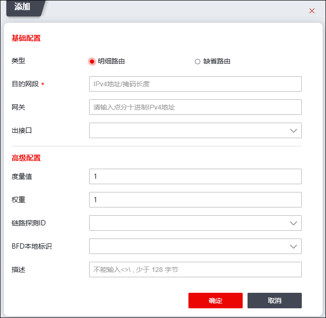

静态路由是由管理员手工添加，不随网络结构的变化而发生任何变化的路由。天融信NGFW支持配置IPv4静态路由和IPv6静态路由，其表项的各字段包括：目的地址、掩码、网关、优先级、出接口、状态和链路探测ID。
在进行静态路由匹配时，如果数据报文满足路由表项的目的地址和掩码匹配条件，NGFW会根据该路由表项的网关和出接口确定从哪个接口转发报文；如果数据报文同时匹配多条静态路由，NGFW则通过负载分担方式处理报文。
IPv4静态路由用于实现IPv4网络互连互通，IPv6静态路由用于实现IPv6网络互连互通，其主要区别是地址格式不同：配置IPv4静态路由时使用IPv4地址，配置IPv6静态路由时使用IPv6地址。
静态路由表项各字段说明如下：
l目的地址：标识IP数据包的目的地址或目的网络区域。
l网关：一般指IP数据包经过NGFW后下一跳路由设备的IP地址。
l度量值：标识路由至目的地址的开销。优先级表明路由表项的优先级，优先级越小路由优先级越高。路由优先级只在同一路由协议内起作用，不同路由协议的路由的优先级没有可比性。对于去往同一目的地的多条路由，若各条路由优先级不同，即可形成路由备份，将优先级最高的路由作为主路由，优先级次高的路由作为备份路由；如果多条路由优先级相同，此时多条路由为等价路由，可实现流量的负载均衡。
l权重：配置路由的权重，值越小，流量比重越低。
l出接口：指定目的地址不为NGFW的IP数据包经由哪个接口转发出去。
l链路探测ID：指链路探测的ID。
l标记（系统根据路由情况自动标记）：表明路由表项的路由类别及其所处状态，U-Up, G-Gateway, H-Host, S-Static, L-Local, C-Connected, O-ospf, i-Interface, r-Radvd, d-DHCP, p-PPPoE, l-Ipprobe, 灰色的为非UP状态路由。
在配置静态路由之前，需要先进行如下步骤：
l配置路由接口IP地址。关于接口的配置具体请参见 接口。
l确定NGFW路由表中的直连路由。
l确定所添加的静态路由的目标地址。
l明确数据通信是双向过程，确保通过NGFW的数据包具备来和回路由。
| 步骤1 | 选择 。 |
| 步骤2 | 点击『添加』，打开“添加”对话框。如下图所示。 |

在添加静态路由时，各项参数的具体说明如下表所示。
参数 |
说明 |
|---|---|
类型 |
设置添加的静态路由类型。可选项：明细路由、缺省路由。明细路由有具体的目的网段，缺省路由表示目的网段为任意网段。 |
目的网段 |
必填项，配置标识IPv4/IPv6包的目的地址或目的网络。需要填写目的地址转换后的真实地址。 说明： IPv4目的地址格式：x.x.x.x/(0-32)；IPv6目的地址格式：x:x:x:x:x:x:x:x/(0-128)。 |
网关 |
配置路由的网关地址，通常为下一跳路由器的入口IP地址。 说明： 对于点对点网络，配置路由时可以不指定网关而只指定出接口；但对于以太网多路访问链路，则必须指定网关，否则NGFW通过ARP协议获取下一跳网络设备的MAC地址时，无法获取到下一跳设备相应接口的MAC地址，从而导致数据包在发送前封装失败。 |
出接口 |
选择数据报文从NGFW的哪个接口进行转发。可以选择物理接口或VLAN虚接口。 |
度量值 |
配置静态路由的度量值，数值越小，优先级越高。 说明： 同一目的地存在多条路由时，优先级高的路由将成为最优路由。 |
权重 |
配置路由的权重，值越小，流量比重越低。例如对于加权轮询的多路径算法，根据各线路权重值的比例分担流量，三条可选路径的权重设置为3:3:4，那这三条线路的流量分担比例为3:3:4。 |
链路探测ID |
设置路由使用的链路探测规则的ID，关于链路探测的配置具体请参见 链路探测。 |
BFD本地标识 |
选择BFD本地标识。关于BFD的配置请参见 BFD。 |
描述 |
输入必要的描述信息。 |
| 步骤3 | 参数设置完成后，点击【确定】按钮完成路由的添加。 |